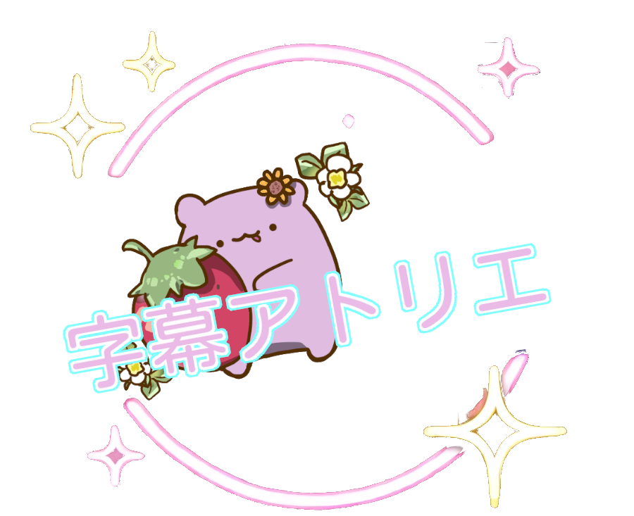

録音開始
録音停止
言語設定
言語1:翻訳しない
言語2:翻訳しない
言語3:翻訳しない
左寄せ
中央揃え
右寄せ
翻訳用のリンクを使用する
OpenAIのAPIキーを使用する
詳細設定
スタイル設定
原文
目標言語 1
目標言語 2
目標言語 3
文字色
文字縁取り色
背景色
フォントサイズ
縁取りサイズ
れいモード
普通モード
スタイルを初期化
請輸入後端服務 URL 和驗證 Key
[トリアンの字幕アトリエ] 緊急事態発生！！¶ゞ(；￣∀￣)ノ☆避難せよ～！
開発者：[ 乙夏れいのファン 夏族ジュノーン & Grok 3 ]
----
著作権 © 2025｜改変・複製・自由使用可、販売および作者の偽称は禁止